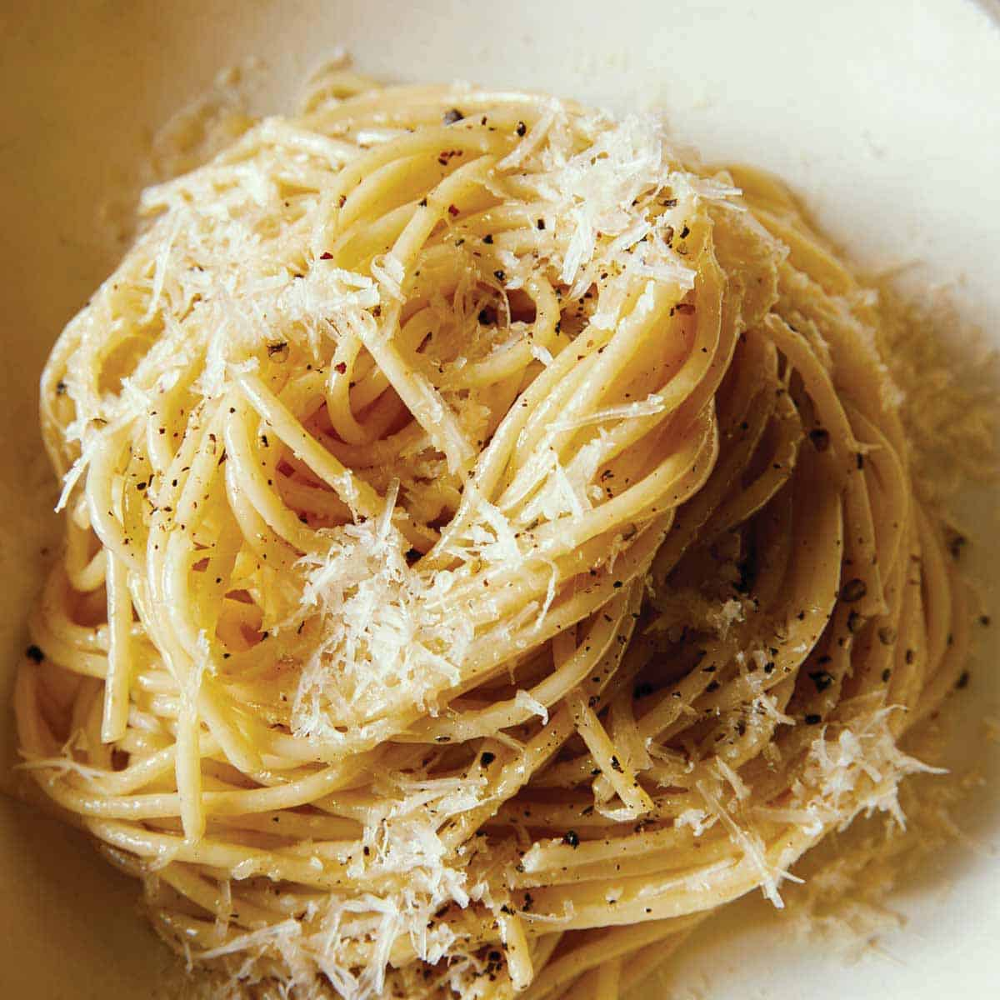

Minimalist Cacio e Pepe Recipe

Description
Cacio e pepe literally translates to “cheese and pepper." These two ingredients are
usually thought of as small components to a dish but in this pasta recipe, they
take center stage. Because black pepper is used so often by cooks, we think
people often fail to see how much of an incredible primary seasoning it can be.
The fruity bite of freshly ground pepper is complex, earthy, sweet and spicy
all at once. Making this pasta (and toasting the pepper) is the perfect way to
show off that flavor.
Ingredients
- Kosher Salt
- 8 Oz. Linguine or Spaghetti
- 2 Tbsp Butter
- 1 Tbsp Olive Oil
- Coarsely Ground Black Pepper
- 3/4 Cup Freshly Grated Pecorino
- 3/4 Cup Freshly Grated Parmesan
Directioins
- In a large pot of boiling salted water, cook pasta until al dente according to
package directions. Reserve ⅔ cup pasta water before draining.
- In a large skillet over medium heat, melt 1 tablespoon butter with oil. Add a
generous amount of black pepper and toast until fragrant, about 1 minute.
- Add ⅓ cup reserved pasta water and bring to simmer. Whisk in remaining 1
tablespoon butter and, using tongs, add pasta, tossing into butter mixture.
- Add cheeses and toss constantly until cheese is melty, removing skillet from
heat when about half the cheese has melted. (If sauce is too thick, loosen
with more pasta water.)
- Serve topped with more Pecorino and Parmesan.